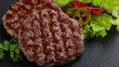

Cajun Burgers

Description
My family likes spicy food. I found the original recipe for these burgers in the Raleigh News
and Observer, then modified ingredients until they suited our taste. Makes 6 servings.
Ingrediants
- 1 tablespoon paprika
- 1 tablesppon chili powder
- 1 teaspoon onion powder
- 1 teaspoon garlic powder
- 3/4 teaspoon salt
- 1/2 teaspoon black pepper
- 1 teaspoon white pepper
- 1 teaspoon cayenne
- 1/2 teaspoon ground cumin
- 2 pounds ground sirloin
- 1/4 cup mayonnaise
- 2 teaspoons lemon juice
- 6 slightly crusty hamburger buns
- 6 tomato slices
Steps
- Prepare a medium-hot fire or preheat grill.
- In a small dish combine paprika, chili poder, onion powder,
garlic powder, salt, black pepper, white pepper, cayenne and cumin. Set aside.
- Divide the sirloin into 6 portions and gently form each into
a patty about 4 inches in diameter. Liberally sprinkle both sides
of the patties with seasoning mixture, coating evenly.
- In a small dish stir together mayonnaise and lemon juice. Set aside.
- Grill or broil the burgers, turning once, about 5 to 7 minutes
for medium-rare, 6 to 8 minutes per side for medium.
- A couple minutes before the burgers are done, place the buns,
cut side down, on the grill and lightly toast them.
- Remove burgers and buns from grill or broiler.
- Assemble the burgers by spreading the mayonnaise mixture on the
cut side of the buns, then adding the burgers and tomoato slices.